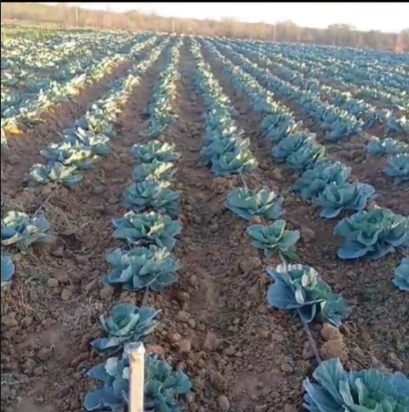
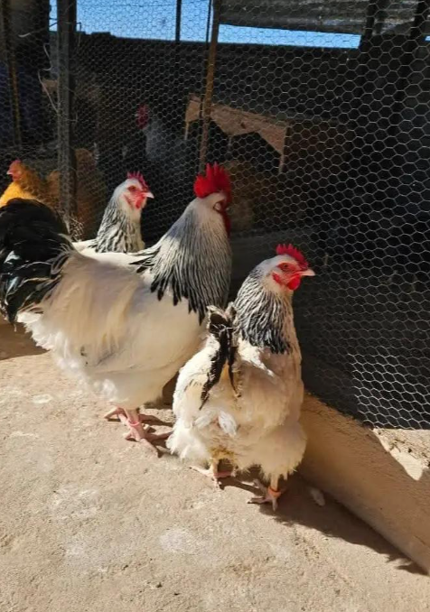
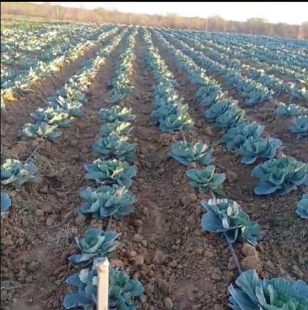
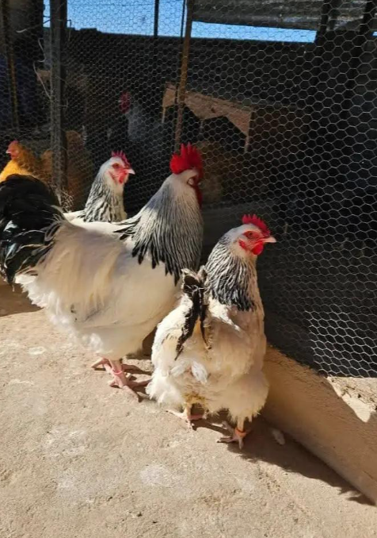

About Us
KTEE Fresh Produce is a family-run agricultural business focused on high-quality cabbage production and healthy poultry farming. We combine modern farming techniques with sustainable practices to deliver great-tasting produce and ethically raised poultry.
 



Mission
We commit to producing high-quality, fresh, and healthy agricultural products through sustainable farming methods, modern technology, and a strong focus on environmental control. Our goal is to create reliable food supply chains and provide exceptional value to our customers.
Vision
To become a leading, innovative, and sustainable agricultural enterprise known for delivering premium cabbage and poultry products that nourish communities and strengthen food security.